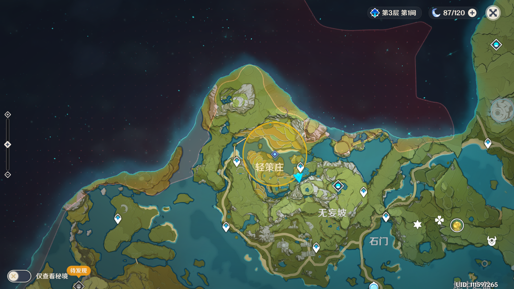
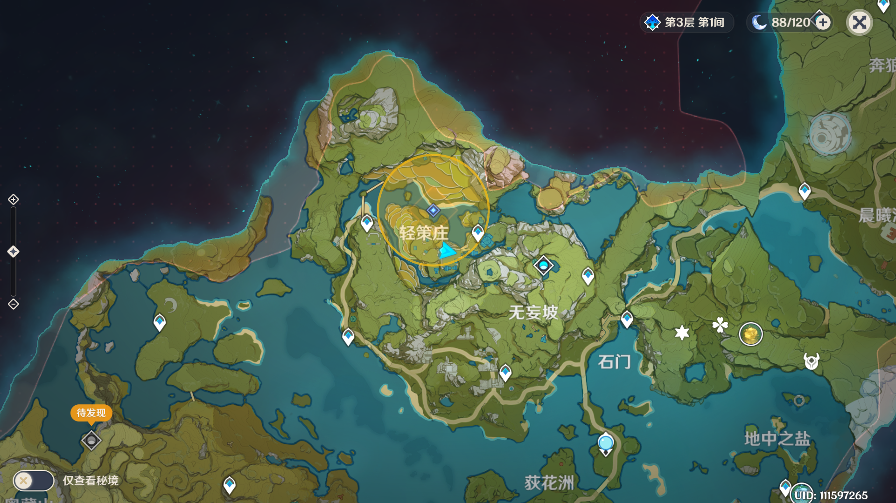
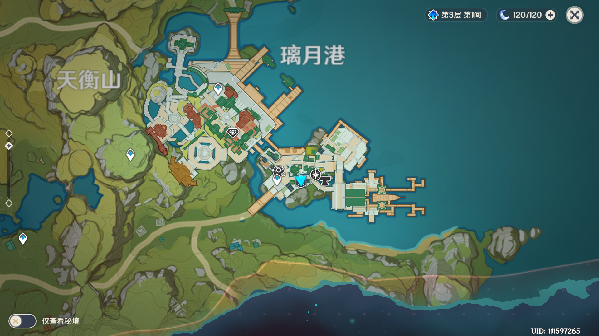
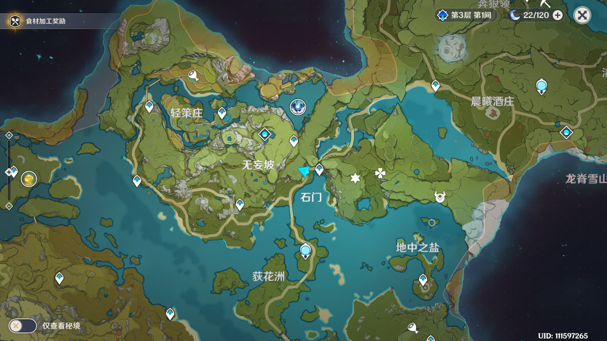

原神物品
坐标 |
地点 |
人物 |
物品 |
|---|---|---|---|
| 蒙德城[猎鹿人餐馆] | 莎拉 <猎鹿人> 侍应生 |
提瓦特煎蛋(200) 渔人吐司(1025) 野菇鸡肉串(450) 面粉(150) 奶油(150) 熏禽肉(900) 黄油(270) 火腿(630) 糖(450) 蟹黄(1125) 果酱(1475) 奶酪(420) 培根(720) 香肠(840) 食谱:庄园烤松饼(2500) 食谱:火火肉酱面(2500) 食谱:白汁时蔬烩肉(2500) 食谱:嘟嘟莲海鲜羹(5000) 食谱:黄油松茸(5000) 食谱:堆高高(5000) |
|
|  | 轻策庄东南方 传送锚点下方 磨坊旁 |
小白 <磨坊主> |
豆腐(120) 杏仁(150) 霓裳花(1000) 琉璃百合(50000) 食谱:山珍热卤面(2500) 食谱:轻策农家菜(5000) |
|  | 轻策庄东南方 | 凯叔 <茶水摊摊主> |
大碗茶(1000) |
|  | 璃月港[万民堂] | 卯师傅 <万民堂老板> |
提瓦特煎蛋(200) 渔人吐司(1025) 野菇鸡肉串(450) 面粉(150) 糖(450) 香肠(840) 食谱:烤吃虎鱼(1250) 食谱:香嫩椒椒鸡(2500) 食谱:水晶虾(2500) 食谱:水煮黑背鲈(5000) 食谱:松鼠鱼(5000) 食谱:来来菜(5000) |
| 璃月港[万民堂]左侧 | 苏二娘 <小吃摊摊主> |
中原杂碎(6600) 摩拉肉(430) |
|
| 璃月港[荣发商铺]左侧 | 快刀陈 <小吃摊摊主> |
美味的烤吃虎鱼(380) 爆炒肉片(900) |
|
| 璃月港[万民堂]右侧 | 东升 <荣发商铺> 店主 |
盐(60) 胡椒(80) 洋葱(80) 牛奶(100) 番茄(120) 卷心菜(120) 土豆(120) 小麦(100) 稻米(100) 虾仁(120) 豆腐(100) 杏仁(120) |
|
|  | 石门传送点左侧 | 老周叔 <大碗茶摊主> |
大碗茶(1000) |
其他
安柏 = 燃火永续真君 / 燃炬灼藤真君
凯亚 = 踏冰填海真君 / 凝冰渡海真君
丽莎 = 电疗按摩真君 / 落雷核爆真君
派蒙 = 应急食物
轻策庄 绝云椒椒 食材 一日游
珍珠翡翠白玉汤 / 松茸酿肉卷 主线 奥藏山附近3个篝火
清泉镇 玛拉 野猪公主7